Итоговая работа
1. Цель работы
Целью итоговой работы является объединение разработанных компонентов в единое FastAPI-приложение для управления пользователями, тренировками, упражнениями и мышечными группами. В работе проверяется корректность CRUD-операций, связей между сущностями и работы API через Swagger.
2. Структура приложения
В приложении реализованы следующие основные сущности:
- User — пользователь системы;
- Workout — тренировка пользователя;
- Exercise — упражнение, входящее в тренировку;
- MuscleGroup — мышечная группа;
- ExerciseMuscleGroupLink — промежуточная таблица для связи упражнений и мышечных групп.
Основная связь между сущностями имеет следующий вид:
User → Workout → Exercise
Для упражнений и мышечных групп реализована связь M:N, поскольку одно упражнение может относиться к нескольким мышечным группам, а одна мышечная группа может быть связана с несколькими упражнениями.
3. Запуск и проверка API
После запуска приложения FastAPI API становится доступным через Swagger по адресу:
http://127.0.0.1:8000/docs
В Swagger представлены группы методов для пользователей, тренировок, упражнений, мышечных групп и связи между упражнениями и мышечными группами.
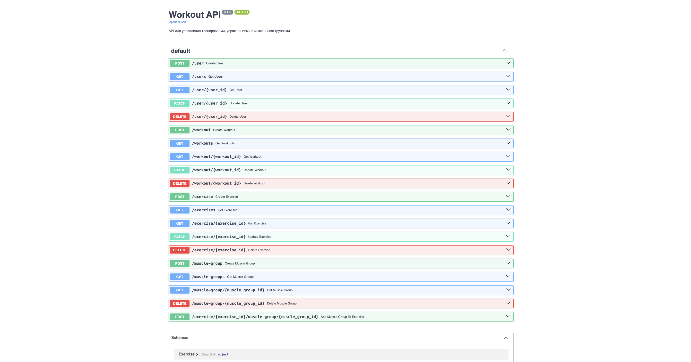
Рисунок 1 — Swagger-документация разработанного API.
4. Работа с пользователями
Для проверки API был создан пользователь с помощью метода POST /user.
В качестве данных были указаны имя «Зарина», возраст 20 лет, вес 55 кг, рост 165 см и уровень 2. В результате сервер вернул статус 200 и автоматически присвоил пользователю идентификатор 3.

Рисунок 2 — Создание пользователя с помощью POST /user.
После создания пользователя был выполнен запрос GET /users. В результате API вернул список пользователей, включая созданного пользователя с id = 3.
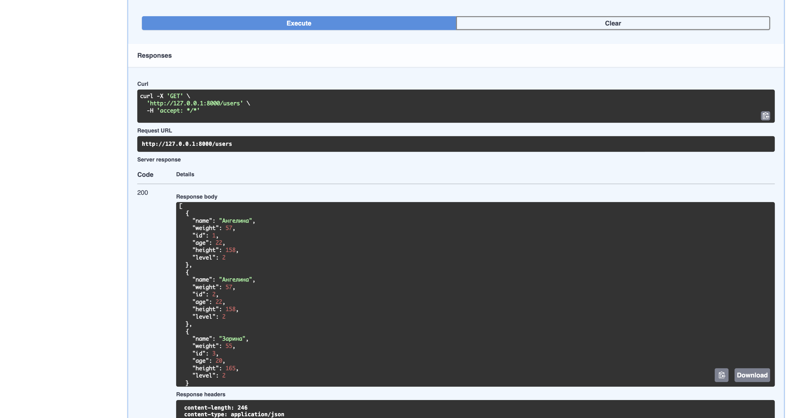
Рисунок 3 — Получение списка пользователей.
Для проверки получения отдельной записи был выполнен запрос GET /user/{user_id} с идентификатором 3.
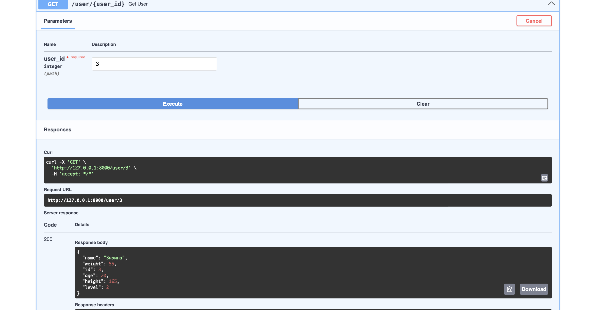
Рисунок 4 — Получение пользователя по идентификатору.
Для проверки изменения данных был использован метод PATCH /user/{user_id}. Уровень пользователя был изменён с 2 на 3.
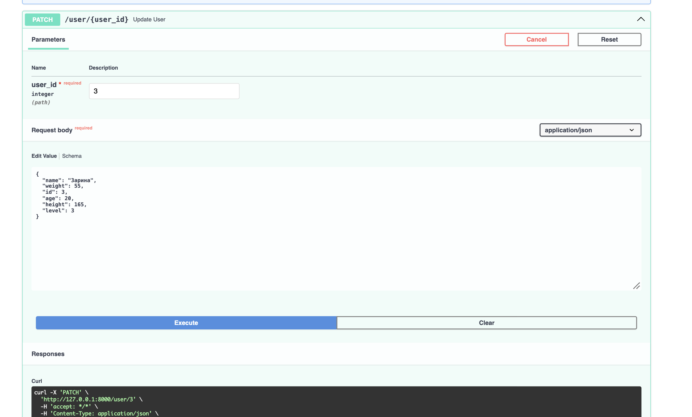
Рисунок 5 — Изменение данных пользователя.
5. Работа с тренировками
Для пользователя с id = 3 была создана тренировка с помощью POST /workout.
В тренировке указаны категория «силовая», название «Тренировка ног», дата 2026-10-01, продолжительность 60 минут и связь с пользователем через user_id = 3.
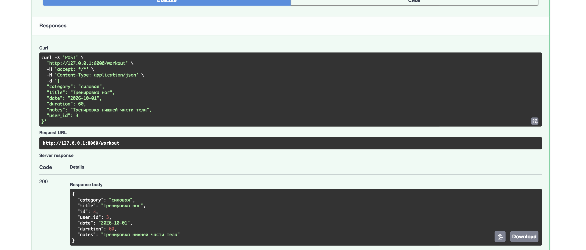
Рисунок 6 — Создание тренировки.
С помощью GET /workouts был получен список тренировок. Созданная тренировка присутствует в списке и связана с пользователем id = 3.
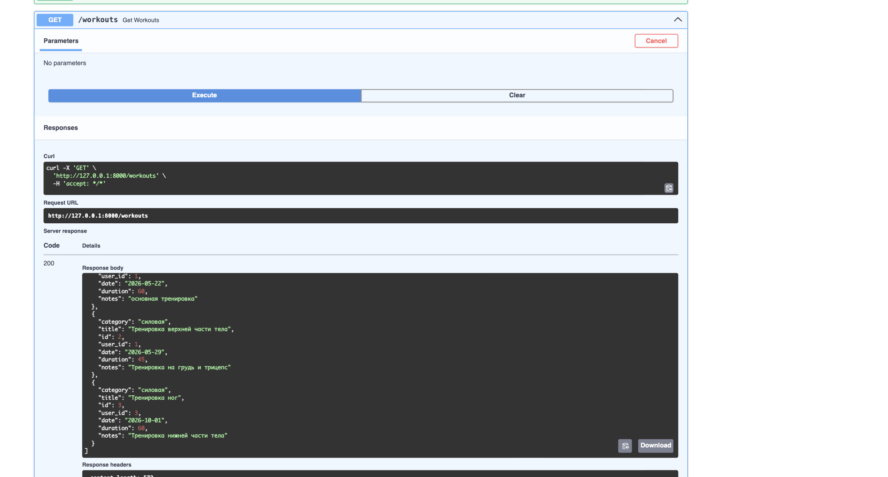
Рисунок 7 — Получение списка тренировок.
6. Работа с упражнениями
Для созданной тренировки было добавлено упражнение «Приседания». Упражнение содержит 3 подхода по 12 повторений с весом 30 кг и связано с тренировкой id = 3.
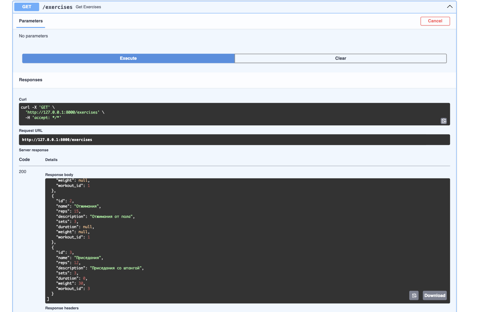
Рисунок 8 — Получение списка упражнений.
7. Связь упражнений и мышечных групп
Для проверки связи M:N была создана мышечная группа «Квадрицепс» с описанием «Передняя группа мышц бедра».
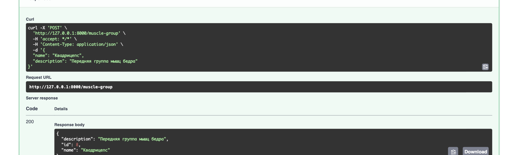
Рисунок 9 — Создание мышечной группы.
После этого упражнение «Приседания» (id = 3) было связано с мышечной группой «Квадрицепс» (id = 8). Для связи было установлено значение level = 1.
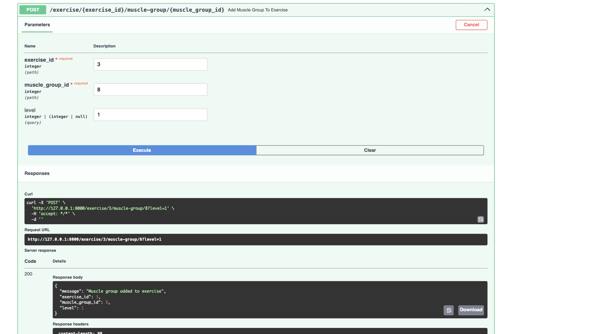
Рисунок 10 — Добавление мышечной группы к упражнению.
Корректность связи была дополнительно проверена с помощью GET /exercise/3. В результате в поле muscle_groups появилась мышечная группа «Квадрицепс» с установленным уровнем связи.
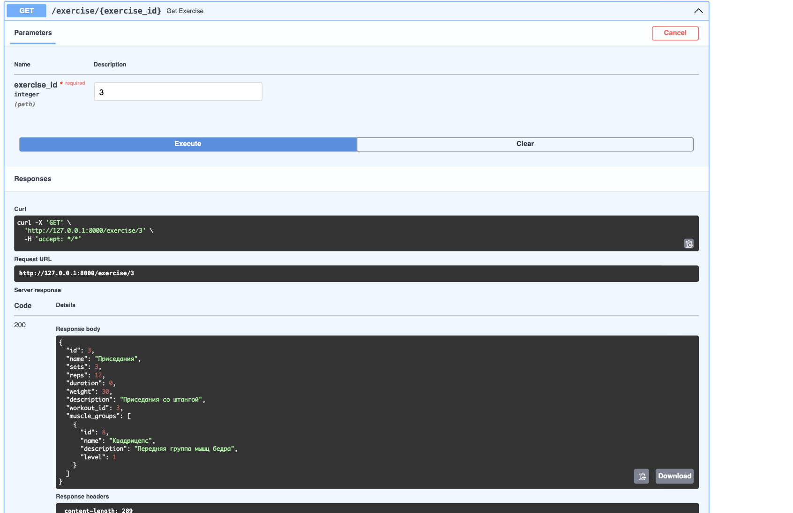
Рисунок 11 — Получение упражнения вместе со связанной мышечной группой.
Также был выполнен GET /muscle-groups, который подтвердил наличие созданной мышечной группы в базе данных.
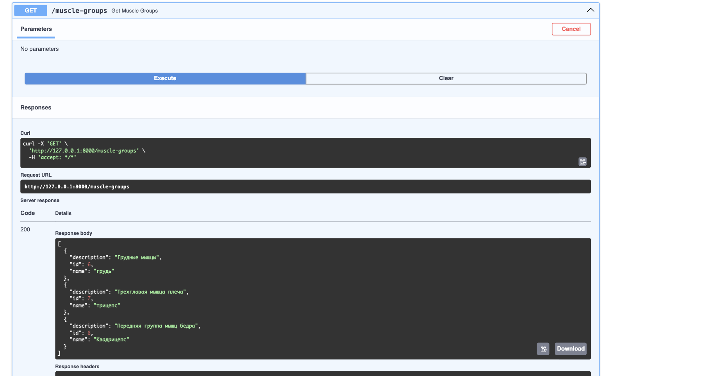
Рисунок 12 — Получение списка мышечных групп.
8. Проверка удаления данных
При первоначальной проверке удаления пользователя id = 3 сервер вернул ошибку 500, поскольку пользователь был связан с тренировкой, а тренировка — с упражнением.
Для корректной обработки удаления была изменена логика метода DELETE /user/{user_id}. Перед удалением пользователя удаляются связанные упражнения, связи упражнений с мышечными группами и тренировки.
После внесения изменений повторный запрос DELETE /user/3 завершился успешно со статусом 200.
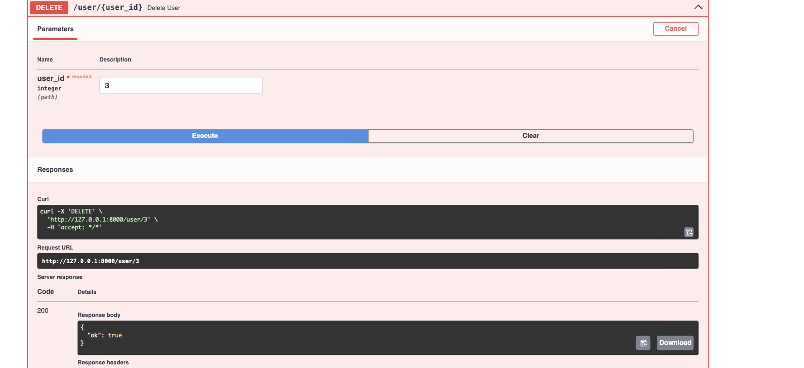
Рисунок 13 — Удаление пользователя и связанных данных.
После удаления был повторно выполнен GET /users. Пользователь с id = 3 отсутствует в полученном списке, что подтверждает успешное удаление.
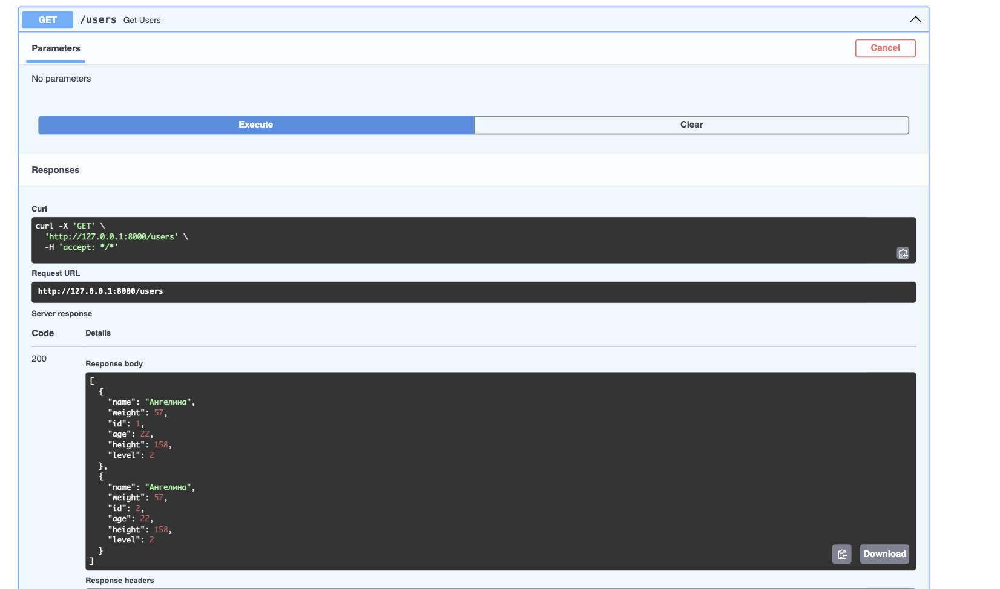
Рисунок 14 — Проверка отсутствия удалённого пользователя.
9. Вывод
В ходе итоговой работы было проверено функционирование разработанного FastAPI-приложения. Были протестированы основные CRUD-операции для пользователей, тренировок, упражнений и мышечных групп.
Также была проверена связь M:N между упражнениями и мышечными группами с использованием промежуточной таблицы ExerciseMuscleGroupLink и дополнительного поля level.
Дополнительно была проверена обработка удаления связанных объектов. После изменения логики удаления пользователь и связанные с ним данные корректно удаляются из базы данных.
Таким образом, разработанный API позволяет создавать, получать, изменять и удалять основные сущности приложения, а также работать с установленными между ними связями.